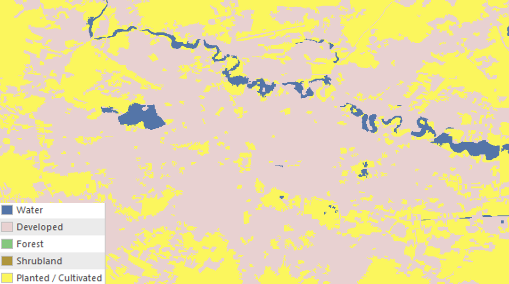
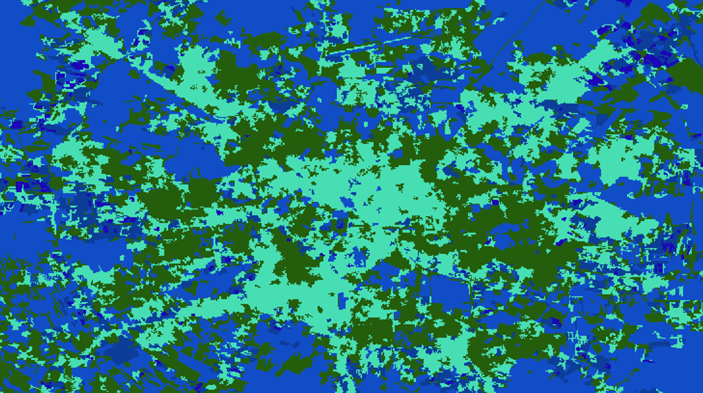
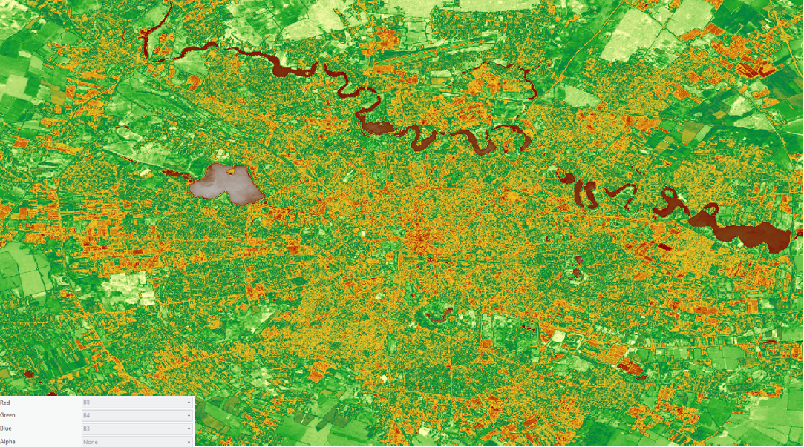

Land Cover Maps
General Info:
Land cover pertains to the different ways the Earth is covered, from forests to urban sprawls. This project is a general analysis of the different physical features that characterize Bucharest and its surroundings. The image of the city has been computed using Remote Sensing technology, which is based on a passive sensor (Sentinel 2) that encircles Earth as it captures electromagnetic energy from the sunlight that is being reflected from the ground up. The different bands of electromagnetic energy that the satellite receives can be classified and transformed into visible light that the human eye can comprehend. Thus, classification can be done both manually and automatically and different results emerge.
Supervised object-based classification map
Supervised classification implies that classification of types of land cover is manually created so it lets me choose the number and type of classes, making the map clearer and better suited to my project goals, though it's prone to human error in labelling.
Unsupervised object-based classification map
Unsupervised classification is faster as it is an automatic classification process, but the map will include all classes, which can clutter the image when only a few features matter. Overall, supervised classification better highlights key areas like vegetation and urban sprawl in Bucharest due to control over displayed categories. However, it struggles to distinguish between similar green areas for example between forest and cultivated land, possibly due to labelling or computational errors. Unsupervised maps make water and land hard to distinguish—likely because of surrounding vegetation—and show cities in overly fine detail, making them harder to interpret.
NDVI map
NDVI is a standardized index used to the assess the health and density of vegetation. It is calulcated from the eletrocmagmetic sprctrum data at two specific bands: red and near-infrared. Thus, in this image, the ligher the greem the healthier the vegetation (which also correlates with areas of forests).
Skills acquired:
Through this project, I learned how to upload a satellite image to ArcGIS Pro and how to change its band combination (the colour that corresponds to each features) in order to assess certain aspects of the landscape like vegetation health or urban sprawl. I also learned how to process the image with different types of classifications (supervised/unsupervised & object-based/pixel-based).